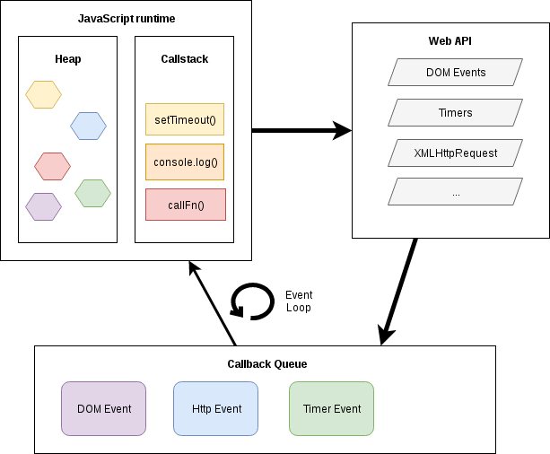

Projekt i implementacja systemów webowych
Programowanie asychroniczne i reaktywne
Asynchroniczność
Sytuacja, w której program komputerowy musi reagować na zdarzenia niezależnie od własnego przebiegu.
Przykłady:
- Obsługa sygnałów systemu operacyjnego Unix.
- Obsługa zdarzeń systemu operacyjnego Windows.
- Obsługa przerwań przez procesor.
JavaScript jest językiem jednowątkowym.
W jaki sposób można dysponując jedynie jednym wątkiem obsługiwać zdarzenia typu "kliknięcie przycisku" albo komunikację sieciową?
Model wykonawczy JavaScript
Promise
Co niedzielę ojciec prosi syna o prognozę pogody.
W tym celu syn musi udać się na wzgórze i obserwując horyzont przy pomocy teleskopu ocenić stan pogody.

Syn składa obietnicę: pójdę, sprawdzę i dam Ci znać!
Ojciec zatem zaczyna planować:
- Gdy pogoda będzie dobra, płynę łódką na ryby.
- Gdy będzie zła lub też gdy prognozy nie da się określić - zostaję w domu.

// function somewhere in father-controller.js
var makePromiseWithSon = function() {
// This service's function returns a promise,
// but we'll deal with that shortly
SonService.getWeather()
// then() called when son gets back
.then((description) => { // fulfilled
if (description==='good') {
prepareFishingTrip();
} else {
prepareSundayRoastDinner();
}
}, (error) => { // rejected
prepareSundayRoastDinner();
});
};app.factory('SonService', () => {
return {
getWeather: function() {
return new Promise((resolve, reject) => {
if (forecast.available()) {
resolve(forecast.description);
} else {
reject('Cannot retrieve forecast!');
}
});
}
};
});app.factory('SonService', () => {
return {
getWeather: function() {
return new Promise((resolve, reject) => {
const xhr = new XMLHttpRequest();
xhr.open('GET', 'myweather.com');
xhr.onload = () => resolve(xhr.responseText);
xhr.onerror = () => reject('Cannot retrieve forecast!');
xhr.send;
});
}
};
});Źródło: http://andyshora.com/promises-angularjs-explained-as-cartoon.html
ECMAScript 6: tworzenie
var p = new Promise(function(resolve, reject) {
if (/* condition */) {
resolve(/* value */); // fulfilled successfully
}
else {
reject(/* reason */); // error, rejected
}
});"konsumpcja"
p.then((val) => console.log("fulfilled:", val),
(err) => console.log("rejected: ", err));Programowanie reaktywne
Programowanie reaktywne to technika programowania oparta o asynchroniczne strumienie danych.

Strumień danych emituje: wartości, błędy oraz sygnał completed.
Sygnał completed informuje o zamknięciu strumienia danych - więcej danych już nie nadejdzie.
Po co?
Typowy przypadek użycia w aplikacji biznesowej.

Komunikacja sieciowa!
Ile czasu potrzeba na komunikację sieciową?

W klasycznym programowaniu (synchronicznym) wątek oczekujący na odpowiedź np z serwera baz danych nasłuchuje (bezużytecznie) na porcie TCP/IP.
I co z tego? Przecież system jest wielowątkowy, inny wątek może być wykonywany w tym czasie.
Przełączenie kontekstu dla wątku:
- Rejestry procesora
- Rejestr wskaźnika stosu
- Licznik rozkazów
- Logika schedulera
- A co z pamięcią podręczną procesora?
Ile czasu oszczędzamy dzięki pamięci podręcznej procesora?
Przykład: reaktywny serwer HTTP dla Javy (Ratpack)

Więcej: https://ratpack.io
Biblioteka RxJS
RxJS biblioteka programowania reaktywnego wykorzystująca koncepcję Observables jako implementacji strumieni danych.
Biblioteka RxJS jest wykorzystywana przez Angular.
@Injectable()
export class UserService {
constructor(private http: Http) {}
getAllUsers(): Observable<Array<User>> {
return this.http.get('services/rest/users')
.map(res => res.json());
}
findUser(id: number): Observable<User> {
return this.http.get(`services/rest/users/${id}`)
.map(res => res.json());
}
saveUser(user: User) {
return this.http.post('services/rest/users', user);
}
}Tworzenie Observables
Observable.fromEvent(button,'click')Observable.fromArray([1,2,3])Observable.fromPromise(promise)Observable.of(1,2,3)Observable.timer(200/*ms*/, 100/*ms*/)
Subskrybowanie
var source = Rx.Observable.timer(200, 100)
.timeInterval()
.pluck('interval')
.take(3);
var subscription = source.subscribe(
(x) => console.log('Next: ' + x),
(err) => console.log('Error: ' + err),
() => console.log('Completed'));
// => Next: 200
// => Next: 100
// => Next: 100
// => CompletedPrzekształcanie Observables
Każdy operator przekształcający tworzy nową instancję Observable.
source.map(Function | Object)source.pluck(propertyName:String)source.filter(predicate:Function)source.throttle(windowDuration)source.skip(count)source.take(count)source.buffer(bufferClosingSelector:Observable)source1.merge(source2)
Przykład: Throttle
var times = [
{ value: 0, time: 100 },
{ value: 1, time: 600 },
{ value: 2, time: 400 },
{ value: 3, time: 900 },
{ value: 4, time: 200 }
];
var source = Rx.Observable.from(times)
.flatMap((item) => Rx.Observable.of(item.value)
.delay(item.time))
.throttle(300 /* ms */);
var subscription = source.subscribe(
(x) => console.log('Next: %s', x),
(err) => console.log('Error: %s', err),
() => console.log('Completed'));
// => Next: 0
// => Next: 2
// => Next: 3
// => CompletedPrzykład
Dla przycisku chcemy reagować za każdym razem, gdy wykonano "dwuklik".
Uogólniając, chcemy reagować także na potrójne, poczwórne (itp) kliknięcia.
Chcemy wiedzieć, ile było kliknięć w każdej "paczce".
var button = document.querySelector('.this');
var clickStream = Rx.Observable.fromEvent(button, 'click');
var multiClickStream = clickStream
.buffer(() => clickStream.throttle(250))
.map((list) => list.length)
.filter((x) => x >= 2);
var singleClickStream = clickStream
.buffer(() => clickStream.throttle(250))
.map((list) => list.length)
.filter((x) => x === 1);
singleClickStream.subscribe(function (event) {
document.querySelector('h2').textContent = 'click';
});
multiClickStream.subscribe(function (numclicks) {
document.querySelector('h2').textContent = ''+numclicks+'x click';
});
Rx.Observable.merge(singleClickStream, multiClickStream)
.throttle(